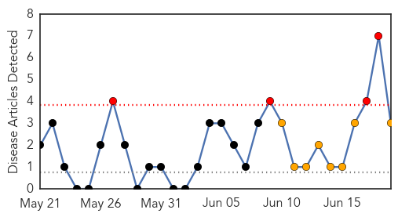
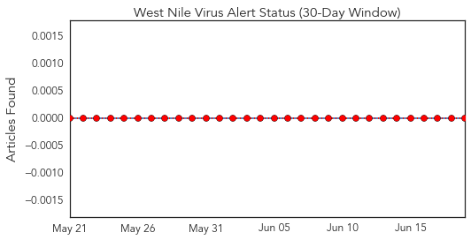
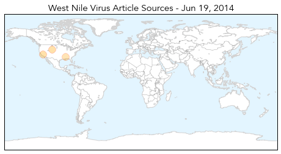
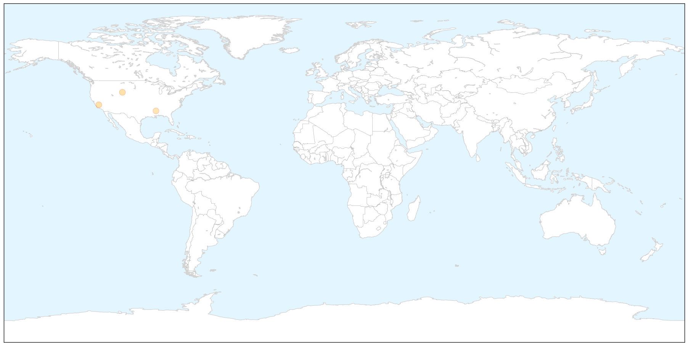
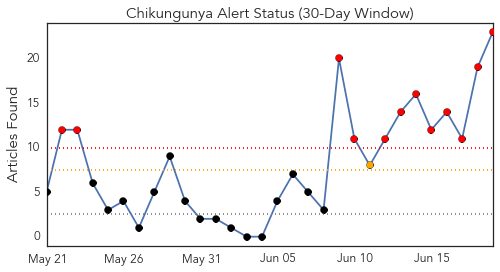
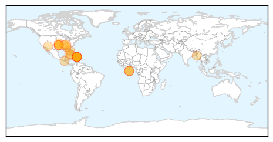
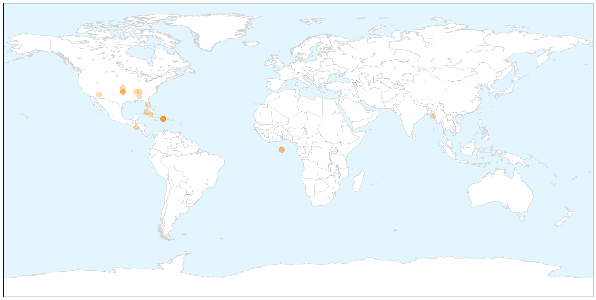

West Nile Virus
30-Day Web Trend
4 alerts, 8 warnings

30-Day Twitter Trend
0 alerts, 0 warnings

Article Locations

X

Article Confidences

Top Articles:
Top Tweets:
-
No tweets found for Jun 19, 2014
Chikungunya
30-Day Web Trend
12 alerts, 1 warnings

30-Day Twitter Trend
0 alerts, 0 warnings

Article Locations

X

Article Confidences

Top Articles:
- 1.000
- Chikungunya virus spreads through Caribbean to Cuba
- 0.999
- Tennessee confirms 2nd chikungunya case in Knoxville area
- 0.999
- Mosquito-borne chikungunya virus spreads to Cuba
- 0.999
- Chikungunya Virus Keeps Spreading To Various Parts Of Caribbean And Florida
- 0.998
- Six cases of chikungunya confirmed in Cuba
- 0.998
- Chikungunya virus spreads in Americas, enters U.S. via travelers
- 0.998
- First Oklahoma case of chikungunya confirmed in traveler
- 0.998
- First Oklahoma case of chikungunya confirmed in traveler
- 0.998
- 2 Cases of Mosquito-borne Virus Chikungunya Reported in Florida
- 0.997
- 6 Cases of Chikungunya Virus Confirmed in Cuba
- 0.997
- New Virus Spikes in the Islands
- 0.995
- U.S. Travelers Return Home With Tropical Disease. Will It Spread in the States?
- 0.995
- Tennessee confirms 2nd chikungunya case
- 0.995
- Health officials monitor U.S. cases of mosquito-borne illness ch
- 0.992
- First Oklahoma case of chikungunya virus confirmed
- 0.992
- Threatening mosquito virus is making a come back - Story
- 0.990
- The Oklahoma Department of Health confirms chikungunya virus case in Tulsa
- 0.982
- Chikungunya virus found in Leon County
- 0.977
- Cuba imports chikungunya cases from Haiti, DR
- 0.962
- Chikungunya Virus Present In Leon County
- 0.954
- Arizona at risk for new mosquito virus
- 0.942
- Tulsa County resident who traveled to Haiti has state's first case of chikungunya virus
- 0.858
- Warnings issued after mosquito-borne chikungunya virus confirmed in Georgia
Top Tweets:
-
No tweets found for Jun 19, 2014